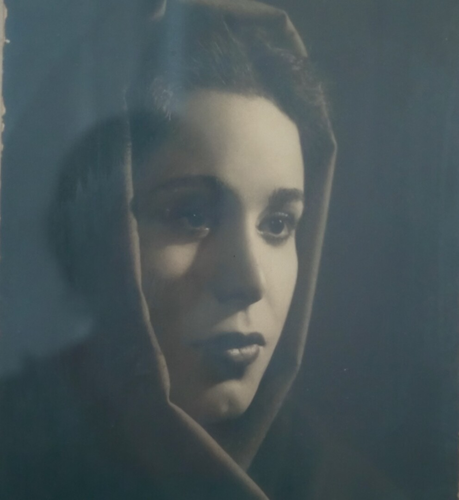

Documentary filmography
Mamina


- Director
- Amira Abdel-Fadil
- Production
- IMS, Nazra Films, Goethe Institute, Red Star
Synopsis
Amira, a young woman deeply attached to her grandmother, is struggling to cope with her loss. Their bond was nurtured in her grandmother’s kitchen through cooking and sharing meals together. Now, without her grandmother’s abundant love, Amira feels lost and misses her terribly. As she grieves and searches for love in those around her, including her mother, and within herself, she begins to uncover what might be the key to moving forward despite the pain.
Film stills


